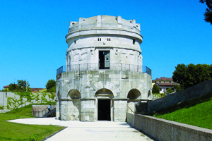
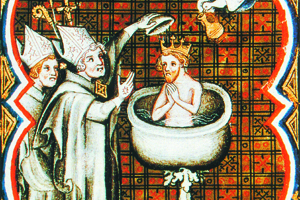

Lezione 5  Invasioni barbariche
Invasioni barbariche


RAVENNA
L’ostrogoto Teodorico, di fede ariana, fece erigere intorno al 520 a Ravenna il mausoleo in marmo d’Istria che sarebbe diventato la sua tomba; la copertura a cupola è formata da un unico blocco di pietra.
476: Romolo Augusto, ultimo imperatore romano, viene deposto da Odoacre, re degli sciri e degli eruli. Fine dell’Impero romano d’Occidente.
489-493: Teodorico, re degli ostrogoti, espugna Ravenna e uccide Odoacre. Teodorico conquista l’Italia.
REIMS
24 dicembre 496: il sovrano dei franchi Clodoveo viene battezzato a Reims dal vescovo Remigio, sancendo così un’alleanza tra la Chiesa cattolica e il la dinastia merovingia. Secondo il racconto di Gregorio di Tours, illustrato in questa miniatura francese del XIV secolo, fu una colomba, simbolo dello Spirito Santo, a portare l’ampolla dell’olio santo.COSTANTINOPOLI
Fine VI sec. I monaci Cirillo e Metodio vengono mandati nei Balcani dalla corte di Costantinopoli per convertire gli slavi al cristianesimo.